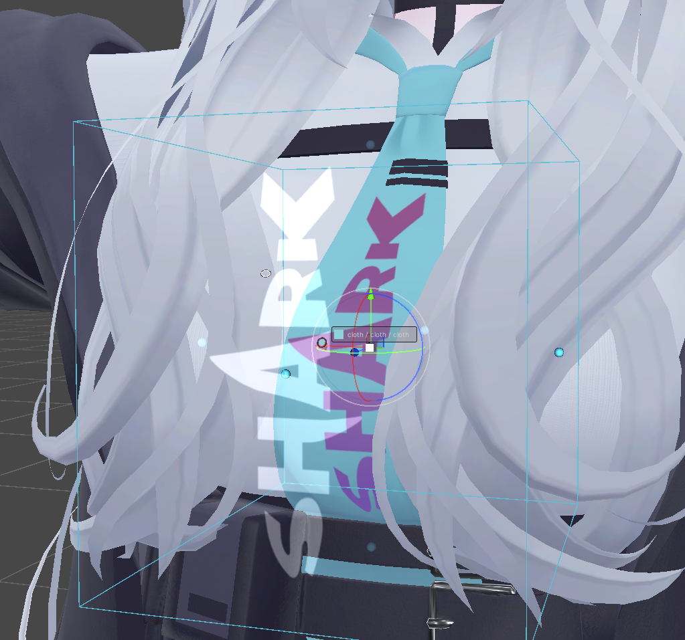
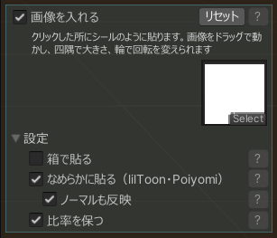
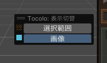
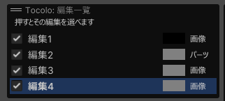
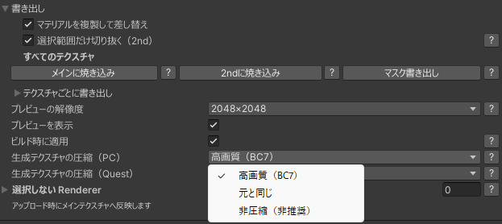

Tocolo（トコロ）
Scene でクリックした場所の色を、陰影を保ったまま変える Unity エディタ拡張
目次
この説明書の読み方
- Scene の左上に出る「Tocolo」パネルは、上の青い「範囲」ブロック 範囲 と、下の暖色の「色」ブロック 色 に分かれています。本書でもこの 2 色で区別します。
- パネルの各ブロックは、よく使う項目だけを表に出し、ほかの項目は末尾の「▸ 設定」に畳んでいます。本書も、パネルに見えている項目を先に、「▸ 設定」を開くと出る項目を後に説明します。中の値を既定から変えていると、閉じていても「設定（変更あり）」と出ます。開いたかどうかはプロジェクトごとに覚えます。
- Pro が付いた項目は有料版（Tocolo Pro）を入れたときだけ使えます。
- パネルの各項目には ? ボタンがあり、押すとその場で説明が出ます。本書は ? の内容をまとめて読める形にしたものです。
1. Tocolo でできること
アバターの Scene 上の見た目をクリックして、そこに使われているメインテクスチャの一部の色を変えます。元の陰影（明暗の分布）はそのまま残るので、塗り直したような不自然さが出ません。処理は NDMF による非破壊で、シーン上の元のテクスチャ・マテリアルは一切書き換えません。
こんなときに
- 衣装の一部だけ色を変えて、髪や小物と合わせたい
- 同じテクスチャを使う別のパーツは元の色のまま残したい
- 上から下へ色が変わるグラデーションをテクスチャを描かずに入れたい
- ロゴやワッペンなどの画像を、服のしわに沿って貼りたい
- 色の候補をいくつも試して、決まったものだけアップロードしたい

体験版と Pro の違い
| 体験版（無料） | Tocolo Pro | |
|---|---|---|
| Scene でクリックして範囲を選ぶ・色を変える | ○ | ○ |
| グラデーション・除外リスト・複数選択 | ○ | ○ |
| 画像を入れる（Scene で貼って確かめる） | ○ | ○ |
| NDMF プレビュー（Scene に結果を表示） | ○ | ○ |
| アップロード時に反映（色変え・画像とも） | × | ○ |
| 書き出し（メイン／lilToon 2nd／マスク） | × | ○ |
体験版では、色を変えた状態でアップロードしても元の色のままアップロードされます（アップロード自体は失敗しません。NDMF の報告ウィンドウに案内が出ます）。Pro を追加すると、体験版で作った編集はそのまま引き継がれます。
2. 導入と削除のしかた
インストール
- ダウンロードしたファイルに入っている「…をVCC・ALCOMに追加.url」をダブルクリックします。VCC または ALCOM が開き、リポジトリの追加画面になるので［Add］（追加）を押します。
- VCC／ALCOM が開かない場合は、同梱の案内に書かれたリンクをコピーして、VCC／ALCOM の「Add Repository」に貼り付けてください。
- プロジェクトに「Tocolo」を追加します。Pro を購入した場合は購入者向けの .url を使うと、「Tocolo」と「Tocolo Pro」の両方が同じ一覧に出ます。NDMF が入っていなければ一緒に入ります。
Tocolo をアバターから削除したいとき
Tocolo のコンポーネントは、最初のクリックで編集を作ったときにアバターのルートへ自動で付きます。色変えをすべてやめたいときは、アバターのルートにある「Tocolo」コンポーネントを Inspector の右クリックメニューから Remove Component で外してください。編集はコンポーネントと一緒に消え、元のテクスチャ・マテリアルはそのまま残ります（外すだけで元の見た目に戻ります）。

Inspector の項目
- Scene で色を変える
- Scene 編集を開始します（Play 中・Prefab 編集モード中は押せません）
- 編集一覧
- 作った編集の有効／無効、名前、並べ替え、削除、「Scene で選ぶ」。反映されない編集（パーツや画像が見つからない・テクスチャがどこにも使われていない）には警告の印が出ます
- 選択しない Renderer
- Scene で選ばれなくする Renderer の一覧（4 章）
- プレビューの解像度
- Scene プレビューの解像度の上限。小さいほど軽く動きます
- プレビューを表示
- OFF で Scene の表示が元に戻ります（編集は残ります）
- ビルド時に適用
- アップロード時に反映するか Pro
- 生成テクスチャの圧縮
- 生成するテクスチャの圧縮形式。PC／Quest 別（8 章） Pro
3. 基本操作
- Scene 編集を始める Scene ビュー左上のツールバーにある色相環アイコンを押すか、Inspector の［Scene で色を変える］を押します。左上に「Tocolo」パネル、右下に「Tocolo: 操作」の案内が出ます。
- 対象アバターを決める シーンにアバターが 1 体なら自動で対象になります。複数あるときはパネルの候補ボタンから選ぶか、Scene のモデルを直接クリックします。無効化したアバターと、Hierarchy の目のマークで隠したアバターは候補に出ません。
- 色を変えたいところをクリック クリックした場所を含む範囲が選ばれ、［選択範囲］（パネル横の小窓「表示切替」）が ON なら縞模様で表示されます。マウスを乗せると丸印が出て、どこが当たるか分かります。
- 色を選ぶ パネルのカラーホイールで色を選ぶと、Scene のプレビューにすぐ反映されます。カラーコードの入力、最近使った 5 色、スポイトからも選べます。
- 続けて編集する 別の場所をクリックすると新しい編集になります。色を決めた編集の範囲をもう一度クリックするか［編集一覧］から選ぶと、その編集を選び直せます。同じ場所に重ねて新しい編集を作りたいときは Shift＋クリックです。
- 終了する Esc か、右下の［終了する］を押します。色を決めないまま終了した編集は残りません。


4. 範囲の調整 範囲
影響範囲（4 モード）
| モード | 選ばれる範囲 | 向いている場面 |
|---|---|---|
| パーツ | クリックしたパーツ（UV のひとかたまり）をまるごと | 袖・襟・リボンなど、パーツ単位で変えたいとき |
| 箱の中 | パーツや UV の切れ目に関係なく Scene に出る箱の内側を塗る。「マテリアルをまたいで選ぶ」ON なら箱に触れる別テクスチャも連結 | 髪のツートン、袖の先だけ、腰から下だけなど、場所で切りたいとき |
| 同じ色 | クリックした場所とほぼ同じ色で、途切れずにつながる部分 | 模様や線、単色の帯 |
| 似た色 | 近い色を広めに。しきい値を大きめに取った状態 | グラデーションや影のある部分 |
モードを切り替えると、選んでいる編集にもすぐ反映されます。
テクスチャの残りを選択
影響範囲がパーツのとき、右端に［テクスチャの残りを選択］が出ます。押すと、そのテクスチャのまだ選んでいないパーツを全部足します（除外リストの Renderer は除く。「各点の色を揃える」は OFF に）。要らないパーツは Ctrl＋クリックで外せます。
パネルに出ている項目（同じ色・似た色）
- しきい値
- どれくらい近い色まで選ぶか。大きいほど広く選びます
- ぼかし
- 選んだ範囲の境目をなめらかにする幅
- 範囲
- 色を探す場所。「つながった範囲」「パーツの中」「テクスチャ全体」「アバター全体（重いかも）」
「▸ 設定」の中
- またいで選ぶ
- 「マテリアルをまたいで選ぶ」。7 ページ
- 隠れている範囲
- 「隠れている範囲も選ぶ」。7 ページ
- ゴマ塩除去
- 同じ色・似た色のとき。塗りに混じる細かい点を取り除きます
- はみ出し幅
- パーツのまわりの UV の空き部分まで色を広げる幅（px）。つなぎ目に元の色の線が見えるときは上げ、マイナスで縁を削ります
箱の中の項目は 8 ページ。範囲の縞模様は小窓「表示切替」の［選択範囲］で出し入れします（8 章）。
4. 範囲の調整（続き） 範囲
複数のパーツをまとめて変える
- Ctrl＋クリック: 同じ編集にパーツ（点）を足す／外す。離れたパーツを 1 つの色で揃えたいときに使います。
- Ctrl＋ドラッグ: エリアの中に見えているパーツをまとめて足します（パーツモードのみ）。エリアを描き始めた場所のパーツが主になります。
- 隠れている範囲も選ぶ（範囲の「▸ 設定」）: ON にすると、エリア選択で他のメッシュの奥に隠れたパーツもエリアに入っていれば選びます。
- マテリアルをまたいで選ぶ（範囲の「▸ 設定」）: ON にすると、別のマテリアル（別のテクスチャ）のパーツも同じ編集に足せます。テクスチャごとの編集が自動で連結され、色や設定はまとめて効きます。
- 各点の色を揃える（色の「▸ 設定」。点が複数のときに出る）: ON では点ごとに明るさの分布を取ってそれぞれを目標の色に揃えます。OFF では全体で 1 つの分布を取るので、点どうしの明るさの差が保たれます。
誤って選びたくないパーツを外す（除外リスト）
エリア選択などで巻き込みたくないパーツは、その Renderer を除外リストに登録します。登録した Renderer は Scene でクリックしてもエリア選択で囲んでも選ばれません。見た目には影響しません（共有テクスチャに掛かった編集はそのまま映り、アップロードや書き出しも通常どおりです）。
- パネルの「範囲」の上にある［除外リスト］（［編集一覧］の右）を押すと、パネルの隣にオーバーレイが開きます。
- Hierarchy の GameObject をドロップ枠にドロップすると、その GameObject の Renderer（無ければ配下の Renderer 全部）が登録されます。
- 一覧の［×］で 1 件ずつ、［すべて外す］でまとめて外せます。Inspector の「選択しない Renderer」でも編集できます。


4. 範囲の調整（箱の中） 範囲
「箱の中」は、Scene に出る水色の箱の内側だけを色変えします。パーツや UV の切れ目に関係なく、箱の面のところで色変えが切れるので、「袖の先だけ」「腰から下だけ」のように場所で区切りたいときに使います。クリックした場所はテクスチャと「元の色」を決めるためだけに使い、範囲は箱で決まります。
- 影響範囲で「箱の中」を選ぶか、選んでから色を変えたい場所をクリックします。クリックしたパーツを囲む箱が出ます。
- 箱の中心のギズモで移動・回転・全体の拡大縮小ができます。移動の矢印と回転の輪は、箱を回してもアバターの向きで出ます。各面の中央にある橙色の丸をつかむと、その面だけを引いて伸縮できます（マウスが乗ると黄色になります）。
- 箱を動かしている間は軽い計算で追従し、離した瞬間に切り口を細かく描き直します。
パネルに出ている項目
- 面のぼかし
- 箱の面のところで色変えをなめらかに切る幅。0 だと面でぱきっと切れます（切り口の階段はそれでも自動でならします）
「▸ 設定」の中
- 箱の中の色を揃える
- ON にすると、箱に入るパーツごとに目標の色に揃えます（「各点の色を揃える」と同じ）。OFF（既定）はパーツどうしの明るさの差が残ります。箱を動かしている間は掛からず、離すと掛かります
- はみ出し幅
- 他のモードと同じ。マイナスで縁を削ります
他の設定との関係
- マテリアルをまたいで選ぶ（「▸ 設定」）: ON なら、箱に触れる別テクスチャのパーツにも連結して同じ色になります。OFF にすると最初のテクスチャだけに戻ります。
- 除外リスト: 箱の中では、除外した Renderer は箱に入っていても色が変わりません（他のモードと違い、見た目にも効きます）。編集中に除外リストを変えるとすぐ反映されます。
- Ctrl＋クリックやエリア選択でパーツを足す操作は、箱の中では使いません（範囲は箱だけで決まります）。
- グラデーション・画像を入れると併用できます。既定では後から ON にした方の箱だけが出ます。箱の中の箱（水色）も出して動かしたいときは、パネル横の小窓「表示切替」で［箱の中］を押してください（8 章）。
5. 色の調整 色
見本行
左が「元の色」（クリックした場所の色）、右が編集中の色（色 1。グラデーションで色 2 を選んでいれば色 2）です。カラーコードは直接入力できます。「元の色」の見本かリセットを押すと、色の指定を取り消して元の色に戻します（選んだ範囲は残ります）。
カラーホイールとスライダー
外側のリングで色相、内側の四角で彩度と明るさを選びます。下のスライダーは HSV／RGB を切り替えられます。ホイール左上のスポイトを押してから Scene のモデルをクリックすると、その場所の元の色を取れます（Esc でやめる）。
ガンマ
スライダーの下の「ガンマ」は、色を変えた後の色に掛ける明るさの曲線です（lilToon の色調補正のガンマと同じ式、0.01〜2）。1 で変化なし、小さいほど明るくなります。暗い髪を明るいパステル色にすると全体が暗く見えるときに下げてください。色のリセットで 1 に戻ります。
最近使った色
直近 5 色が並びます。押すとその色になります。

仕上がりの調整（パネルに出ている項目）
- 陰影の暗さ
- 陰になる部分をどれだけ暗くするか。右ほど暗く、左ほど明るく。白など明るい色で陰が灰色っぽいときは左へ。上の［陰影の暗さを自動調整］で色に合った値に、［リセット］で陰影の暗さと陰影の強調を初期値に戻せます
- 不透明度
- 色変えの不透明度。1 で完全に指定した色になり、下げるほど元の色が残ります
5. 色の調整（続き） 色
「▸ 設定」の中（不透明度の下）
- 陰影の強調
- 元の陰影が弱い部分（真っ白・真っ黒に近い髪など）で、目標の明るさ範囲いっぱいに陰影を広げます。上げすぎると元のノイズも目立ちます
- 各点の色を揃える
- 点（パーツ）が複数のときに出ます。ON では点ごとに目標の色に揃え、OFF では点どうしの明るさの差を保ちます（4 章）
- 元のグラデーションを打ち消す（実験的）
- 髪の根元と毛先など、元の色にある明暗差を消して全体を揃えます。選択範囲を上下（グラデーション ON ならその箱の向き）の帯に分け、帯ごとの明るさで目標の色に写すので、帯の中の陰影は残ります。平らになりすぎたら「打ち消す強さ」を下げてください
色が狙いとずれるとき
同じ色を指定したのに見え方が違うときは、マテリアルのシェーダー側の機能が色に掛かっていることがあります。Tocolo の出力は同じでも、シェーダーの処理で見え方が変わります。クリックした場所でこれらが見つかると、パネルに案内が出ます。案内の下の［マテリアルを開く］を押すと、クリックした所のマテリアルが Inspector に出ます（Inspector がロックされていると何もしません）。
| パネルの案内に出るもの | 何が起きているか | 対処 |
|---|---|---|
| マテリアルの色（Color）が白以外 | マテリアルの色がテクスチャに掛け合わされる | マテリアルの色を白にするか、掛け合わされた後の見た目で色を選ぶ |
| lilToon の色調補正（HSVG）かグラデーションマップ | 色を変えた後に、シェーダーが色をずらす | メインカラーの「焼き込み」で焼き込んでから選び直す |
| lilToon のメインカラー 2nd／3rd | 上に別の色の層が乗っている。「色が変わりにくい」は上を覆う層、「色が混ざる」は乗算などで混ざる層 | その層の「焼き込み」でメインに焼き込んでから選び直すと、まとめて色を変えられる |
| Poiyomi の Color Adjust | 色を変えた後に、シェーダーが色をずらす | Color Adjust の「Bake Color Adjust」で焼き込んでから選び直す |
| Poiyomi の Decals・RGBA Color Masking など | 上に別の色の層が乗っている | シェーダー側の設定を見直す |
6. グラデーション 色
選んでいる範囲に、Scene 空間の位置で色を変えるグラデーションを入れます。「グラデーション」を ON にすると Scene に箱が出て、箱の下端の「色 1」から上端の「色 2」へ変化します。
- 色ブロックの下にある「グラデーション」を ON にします。箱は選択範囲を囲む位置に出ます。
- 箱のギズモで移動・回転・拡大縮小し、各面の橙色の丸でその面だけを伸縮して、向きと範囲を決めます。箱の高さの方向がグラデーションの方向で、下の面に「色 1」、上の面に「色 2」の札が出ます。上下に反転させると色 1 と色 2 が入れ替わります。
- 「色 2」を選ぶと、見本行・ホイール・陰影の暗さ・ガンマ・不透明度が色 2 のものになります（陰影の強調は色 1 と共通）。色 2 の初期値は元の色です。

箱の中だけ
ON にすると、箱の上端より上と下端より下は色変えせず元の色のままになり、箱の高さの範囲だけがグラデーションになります。横方向は箱で切りません。OFF では上下の外側も端の色で続きます。
OFF にしても設定は残る
グラデーションを OFF にしてから ON に戻しても、色 2 と箱はそのまま残ります。最初からやり直したいときは、トグルの行の［リセット］で色 2（陰影の暗さ・ガンマ・不透明度は色 1 と同じ値）と箱を、ON にした直後の状態に戻します。
マテリアルをまたいで連結した編集にも、グラデーションの設定は共通で効きます。箱は 1 つで、各パーツの位置に応じて混ざります。箱を隠したいときは 8 章の小窓「表示切替」を使います。
7. 画像を入れる 色
編集ごとに画像を 1 枚、選択範囲の中に貼ります。ロゴやワッペン、模様などを、テクスチャを描かずに入れられます。画像の透明な部分は元の見た目のまま残ります。貼り方は 2 つあります。
シール（既定）
クリックした所に、紙のシールのように面に沿って貼ります。腕や毛束のような曲がった所にも回り込みます。Scene の枠・四隅の丸・まわりの輪で操作します。
箱で貼る
「▸ 設定」でオンにします。青緑の箱の正面から、奥へまっすぐ写して貼ります。ネクタイ一面のように範囲いっぱいに貼りたいときや、離れたパーツにまたがって貼りたいときに使います（13 ページ）。
シールの貼り方
- 貼りたい所をクリックして範囲を選び、色ブロックの下の「画像を入れる」を ON にします。クリックした所に、面に向いた枠が標準の大きさ（範囲の短い辺の 8 割と、アバターの身長の 1/10 の小さいほう）で出ます。
- 「画像」に Project の画像をドラッグするか、右の丸から選びます。
- 画像をドラッグすると、面に沿って動きます。つかんだ所がカーソルについてきて、画像はいつも面に向きます。四隅の丸で大きさ、まわりの輪で回転を変えます（輪は回した角度だけ回り、何周でも回せます）。
- 色ブロックの設定（新しい色・陰影の暗さ・ガンマ・不透明度・グラデーション）は、ON の間は範囲ではなく画像に掛かります。色を決めなければ画像の色のまま貼られます。

7. 画像を入れる（動かし方・箱で貼る） 色
画像をドラッグで動かす
- 画像が範囲に少しでもかかっている間は、範囲の外へも動かせます。完全に外れる手前と、別のマテリアルの上・何も無い所では止まります。
- 手前の髪などは素通りして、奥の面に沿って動きます。
- ドラッグ中に Esc を押すと、つかむ前の位置に戻ります。動かさずに離すと、ふつうのクリックになります。
- 焼き込みのときは、動かしている間は少し粗い表示で追いかけ、離すと細かく描き直します。
シールの貼られ方
- 面に沿って割り付けるので、強く曲がった所でも伸びずに回り込み、180° を超えても画像が届く所まで貼られます。平らな所の見た目は箱で貼るのと同じです。
- 毛束のように別々のパーツに分かれていても、すき間が小さく向きがそろっていれば、次の毛束へまたいで続きます。
- 枠と丸・輪は、画像の中心の面に平らに出ます。大きく巻いたシールでは枠が面から浮いて見えますが、枠の中を押せばつかめます。
箱で貼る
「▸ 設定」の「箱で貼る」をオンにすると、青緑の箱の正面から奥へまっすぐ写して貼ります（平行投影）。箱のギズモと各面の青緑の丸で、奥行き・縦横別の大きさ・反転・向きを細かく決められます。
- 向きも面に合わせる（「箱で貼る」の下。既定 ON）: 画像をドラッグしたとき、箱の向きもカーソルの下の面に合わせます。OFF なら向きはそのままで位置だけ動きます（正面から写したまま滑らせたいとき）。
- 置き方は編集ごとに覚えます。新しく画像を入れる編集はシールで始まります（0.5.0 より前に作った編集は箱のまま）。
- 「箱で貼る」をオフに戻すと、画像の大きさはそのままで、中心を面の上に移して面に向けます。
クリックしたときの動き
画像の上をクリックすると、その画像の編集を選び直します。シールは枠の中ならどこでも（透明な所も）、箱は画像の透明でない所です。それ以外をクリックすると、ふつうの色変えの編集を作ります。シールの枠の中で色変えの編集を作りたいときは Shift＋クリックです。編集一覧での表記は「画像」です。
OFF にしても設定は残る
画像・置き場所・「▸ 設定」の中身は、OFF にしてから ON に戻してもそのまま残ります。トグルの行の［リセット］を押すと、シールは最初にクリックした所に面の向き・標準の大きさで、箱は範囲を囲む位置に置き直します（画像と「▸ 設定」の中身はそのまま）。
7. 画像を入れる（設定） 色

パネルに出ている項目
- 説明の一文
- いまの貼り方で Scene の何を触れば何ができるか
- 画像
- 貼る画像。Project からドラッグするか、右の丸から選びます
「▸ 設定」の中
- 箱で貼る
- 既定 OFF（シール）。オンで箱からまっすぐ写す貼り方になります（13 ページ）
- 向きも面に合わせる
- 箱で貼るときだけ出ます。既定 ON（13 ページ）
- なめらかに貼る
- 既定 ON。テクスチャに焼き込まず、画像を貼った面を重ねて直接表示します。lilToon と、ロックしていない Poiyomi Toon のマテリアルで使えます。それ以外のマテリアルが範囲に含まれると押せず、焼き込みで貼ります
- ノーマルも反映
- 既定 ON。なめらかに貼るときだけ効きます。服のしわや陰影を画像にも乗せます。lilToon は元の法線マップを画像の位置に写し直すので、法線マップが 1 枚増えます。Poiyomi は服と同じ法線マップをそのまま使います
- 比率を保つ
- 既定 ON。画像の縦横比を保ちます。OFF で枠（箱）いっぱいに引き伸ばします
焼き込みとなめらかに貼るの違い
| 焼き込み | なめらかに貼る | |
|---|---|---|
| 縁の細かさ | 貼る所のテクスチャの細かさまで（細かい画像は粗くなる） | 画像の細かさのまま |
| 左右で UV を共有する服 | 両側に貼られる | 片側だけに貼れる |
| 使えるマテリアル | すべて | lilToon・Poiyomi Toon（ロックなし） |
| アップロード時に増えるもの | 生成テクスチャ（色変えと同じ） | 重ねる面のメッシュ・マテリアル・画像（ノーマルも反映なら法線マップも） |
8. 対象アバター・表示切替
対象アバターの切り替え
シーンに候補が 2 つ以上あるときだけ、パネルの一番上に「対象: ○○」と［対象アバターを切り替える］が出ます。押すと対象が外れ、候補のボタンか Scene のクリックで選び直せます。小物単体を対象にしたいときは、Hierarchy でその小物を選んでからボタンを押してください。
小窓「表示切替」
編集を選んでいる間は、パネルの横に小窓「表示切替」が出ます。Scene に出す物をボタンで選びます。
- ［選択範囲］: いまの編集で色が変わる範囲を、縞模様で Scene に重ねます（アップロードには影響しません）。左の印は縞と同じ橙の斜め縞です。ON／OFF はツール全体で覚えます。
- ［箱の中］［グラデーション］［画像］: 使っている箱のぶんだけ並びます。左の四角は箱の色です。押した物だけが出て動かせます（画像は、シールなら枠と丸・輪）。複数押せば一緒に出せます。押していない物は隠れるので、色や画像を確かめたいときは全部外します。
- 既定では箱は 1 つだけ出ます（画像、グラデーション、箱の中の順に優先）。グラデーションや画像を ON にしたとき、影響範囲を「箱の中」にしたときは、その箱だけに切り替わります。
- 箱の選び方は編集ごとで、保存はされません。別の編集を選ぶと既定に戻ります。

8. 編集一覧・オーバーレイの操作
編集一覧
パネルの上の［編集一覧］（数字は色を決めた編集の数）を押すと、パネルの横に対象アバターの編集が並びます。除外リストと同じ場所に出るので、片方を開くともう片方は閉じます。
- 行を押すと、その編集を選びます（Scene で選び直すのと同じ）。いま選んでいる行は青くなります。
- 左のチェックで有効／無効を切り替えます。
- 名前・色の見本・種類（パーツ・箱・色・画像）と、反映されない編集の警告の印が出ます（Inspector の編集一覧と同じ）。
- 名前の変更と並べ替えは Inspector の編集一覧で行います。編集を消すときは、選んでからパネルの［この編集を削除］を押します。
- 編集が多いときは Scene の高さでスクロールになります。

オーバーレイの大きさと位置
- パネルと操作オーバーレイは、右端の縦線（つまみ）を横にドラッグすると 50〜150% で拡大縮小できます。大きさは保存されます。除外リスト・編集一覧・小窓「表示切替」はパネルに付いて動きます。
- 位置はドラッグで動かせて、次回も同じ位置に出ます。Scene からはみ出す場合は自動で中に寄せます。
- パネルが Scene の高さに収まらないときはホイールを小さくし、それでも収まらなければパネル内がスクロールになります。
- 大きさを元に戻すには Tools > Tocolo > オーバーレイの大きさをリセット。
表示言語
右下の「Tocolo: 操作」オーバーレイの Language で、日本語・English・한국어 を切り替えられます。
9. アップロード時の反映と書き出し Pro
アップロード時に反映
コンポーネントの「ビルド時に適用」が ON なら、アップロード（NDMF のビルド）のときに色変えをメインテクスチャへ焼き込み、生成したテクスチャと複製したマテリアルへ自動で差し替えます。元のテクスチャ・マテリアルは変更しません。生成テクスチャは元の解像度とミップ設定を引き継ぎます。
「生成テクスチャの圧縮」は PC 用と Quest 用を別々に選べます。既定はどちらも「高画質」（PC は BC7、Quest は ASTC 4x4）です。元が BC1（DXT1）だとグラデーションがブロック状に潰れることがあるためで、容量は BC1 の約 2 倍になります。容量を優先するなら PC は「元と同じ」、Quest は「標準（ASTC 6x6）」を選んでください。書き出した PNG のインポート設定にも同じ選択が反映されます。

画像を入れた編集
- 焼き込みで貼った画像は、色変えと一緒にメインテクスチャへ焼き込みます。
- なめらかに貼った画像は、重ねる面のメッシュ・マテリアル・画像（ノーマルも反映なら法線マップも）を生成して差し替えます。重ねる画像は、圧縮が「高画質」「標準」なら元のテクスチャが非圧縮でも圧縮します。
- 1 つの編集の画像を作れなくても、ほかの編集は続けて反映します（NDMF の報告ウィンドウに案内が出ます）。
- 体験版と Pro の版は揃えてください。Pro が古いと、なめらかに貼った画像がアップロードに反映されません（報告ウィンドウに「有料版を更新してください」と出ます）。
9. アップロード時の反映と書き出し（続き） Pro
書き出し
Inspector の「書き出し」を開くと、一番上に「すべてのテクスチャ」の一括ボタン、その下に「テクスチャごとに書き出し」の折りたたみが出ます。書き出したファイルは元のテクスチャの隣に作られ、同じ名前があるときは上書きの確認が出ます。
| ボタン | 出力 | マテリアル | 編集 |
|---|---|---|---|
| メインに焼き込み | 元の名前_recolor.png | 「マテリアルを複製して差し替え」が ON なら、複製（元の名前_recolor.mat）に差し替え。同じ画像を参照する他のプロパティも差し替え | そのテクスチャの編集は自動で OFF |
| 2ndに焼き込み | 元の名前_recolor2nd.png（選択範囲の周りだけ切り抜き） | lilToon のマテリアルを複製し、2nd（使用中なら 3rd）に載せる。OFF でも色やマスクを設定してある層は使用中とみなす。2nd・3rd とも使用中なら警告して飛ばす | 自動で OFF |
| マスク書き出し | 元の名前_recolormask.png（白黒、不透明度を反映） | 変更なし | 変更なし |
- 差し替えと編集の無効化は Ctrl+Z 1 回で戻せます（書き出したファイルは残ります）。
- 「選択範囲だけ切り抜く（2nd）」を OFF にすると、2nd 用の画像を元の大きさのまま書き出します。
- 画像を入れた編集は、焼き込みで貼ったものだけが書き出しの対象です。なめらかに貼った編集は書き出しても無効にならず、アップロード時に反映されます。マスク書き出しでは、画像の形（画像の透明度×不透明度）が白になります。
- 各ボタンの ? で説明が見出し付きで出ます。

10. 注意事項とトラブルシューティング
使えない場面
- Play モード中は使えません。
- Prefab の編集モード中はプレビューされません（NDMF のプレビューが対応していないため）。シーンに置いたアバターで使ってください。
- Project にある Prefab（シーンに置いていないもの）には付けられません。
クリックで選ばれるもの
- Scene に実際に見えている物を選びます。MA の Object Toggle などで隠した物や、メッシュの一部を消した所をクリックすると、その奥に見えている物を選びます。
- lilToon の FakeShadow・Overlay・FurOnly は選ばず、奥の髪などを選びます。同じ形を重ねて描いたテクスチャの無い面も通り抜けます。
- 見えている物がテクスチャの無いマテリアル（単色の服など）のときは、奥の物は選ばず「テクスチャの無いマテリアルは色を変えられません」と出ます。
- メッシュの Read/Write が無効な物をクリックすると、パネルに案内と［Read/Write を有効にする］が出ます。
他のツールとの併用
- Tocolo はアップロード時の処理を、他のテクスチャ加工ツールより先に行います。他ツールの結果の上に色を載せたいときは、先にそのツールでエクスポートしてから Tocolo で色を変えてください。
- キメラヘアマスター（1.6.5 以降）の対象の髪（メッシュ統合 OFF）には、プレビューでもアップロードでも、キメラヘアマスターの色合わせの上に色を重ねます（範囲は元のテクスチャで選びます）。メッシュ統合 ON の髪には重ねられないので、統合を OFF にするかエクスポートしてから使ってください。どちらもパネルに案内が出ます。
- アップロード時にテクスチャへ書き込む他のツールがあると、プレビューではそのツールの効果が Tocolo の色変えの上に表示されないことがあります。アップロード後は上に掛かります。該当するツールがあるときは、編集を選んだときにパネルへ案内が出ます。
- アニメーションや他ツールのマテリアル差し替え機能で後から割り当てられるマテリアルには反映されません（Renderer に最初から付いているマテリアルだけを見ます）。
- 圧縮系のツール（NDMF の最適化フェーズで動くもの）とは共存できます。Tocolo の結果がそのまま圧縮の対象になります。
10. 注意事項とトラブルシューティング（続き）
困ったとき（選ぶ・見え方）
| 症状 | 原因と対処 |
|---|---|
| クリックしても選べない | メッシュのインポート設定で Read/Write が無効です。クリックするとパネルに案内と［Read/Write を有効にする］が出るので、押して有効にしてください（後から追加した衣装・小物でよく起きます）。除外リストに入っている Renderer も選べません |
| 「テクスチャの無いマテリアルは色を変えられません」と出る | クリックした所の一番手前が、テクスチャの無いマテリアルの物です。その物の色は変えられません。奥の物を選びたいときは、手前の物を除外リストに入れてください（4 章） |
| 選択範囲が全体に広がる | 「同じ色／似た色」でしきい値が大きすぎるか、「範囲」が「テクスチャ全体」になっています。しきい値を下げるか「つながった範囲」にしてください |
| つなぎ目に元の色の線が残る | 範囲の「▸ 設定」の「はみ出し幅」を上げてください |
| 縞模様が出ない | 小窓「表示切替」の［選択範囲］を ON にしてください（8 章） |
| 「設定（変更あり）」と出ている | 畳んだ「▸ 設定」の中の値が既定と違います。開いて確かめてください |
| 一部だけ色が薄い・浮く | パネルの案内を確認してください（5 章「色が狙いとずれるとき」）。複数パーツをまとめているなら、色の「▸ 設定」の「各点の色を揃える」と「陰影の強調」を試してください |
| パステル色にすると全体が暗く見える | 「ガンマ」を下げてください（5 章） |
| 箱やシールの枠が見えない・動かせない | パネル横の小窓「表示切替」で、その箱のボタンを押してください（8 章） |
| Scene の操作が効かなくなった | オーバーレイのつまみを掴んだままになっている可能性があります。Scene をクリックするか 2 秒ほど待つと復帰します |
10. 注意事項とトラブルシューティング（続き）
困ったとき（画像・アップロード・容量）
| 症状 | 原因と対処 |
|---|---|
| 編集一覧に警告の印が出る | その編集は反映されていません。印にマウスを乗せると理由が出ます（クリックしたパーツが見つからない・テクスチャがどのマテリアルにも使われていない・画像が見つからない）。パーツが見つからない編集は［見つからない編集を削除］でまとめて消せます |
| 画像をドラッグしても途中で止まる | 画像が範囲から完全に外れる手前と、別のマテリアルの上・何も無い所では止まります。範囲の外に貼りたいときは、範囲を広げてください（7 章） |
| シールの枠が面から浮いて見える | 強く曲がった所に大きく巻いたシールでは、枠は画像の中心の面に平らに出ます。貼られ方は面に沿っています。枠の中を押せばつかめます |
| 「なめらかに貼る」が押せない | 範囲に lilToon・Poiyomi Toon（ロックなし）以外のマテリアルが含まれています。その場合は焼き込みで貼ります |
| なめらかに貼った画像がアップロード後に出ない | 報告ウィンドウに Read/Write の案内が出ていればメッシュの Read/Write を有効にしてください。「有料版を更新してください」と出ていれば、体験版と Pro を同じ版に揃えてください |
| 色を変えた部分がブロック状に潰れる | 生成テクスチャの圧縮が「元と同じ」で、元が BC1（DXT1）のときに起きます。コンポーネントの「生成テクスチャの圧縮」を「高画質」にしてください |
| アップロードしても色が変わらない | 体験版では反映されません。Pro では「ビルド時に適用」が ON かを確認してください |
| Quest 版で色が元に戻る | Quest 用にマテリアルを変換するツールは、元のテクスチャから新しいマテリアルを作るため色変えが載りません。先に Pro の書き出し（メインに焼き込み）をしてから変換してください |
| 書き出しが「一時的なマテリアル」で中止される | 他のツールの Scene プレビューがマテリアルを差し替えています。そのプレビューを解除してから書き出してください（アップロードには影響しません） |
| アバター容量が増えた | 生成テクスチャの既定「高画質」は BC1 の約 2 倍の容量です。コンポーネントの「生成テクスチャの圧縮」を PC は「元と同じ」、Quest は「標準」にすると元と同程度になります。なめらかに貼った画像は、重ねる画像（ノーマルも反映なら法線マップも）のぶん増えます。圧縮系のツールで最適化している場合はそちらの設定が優先されます |
11. 用語と操作の一覧
用語
- 編集
- 1 回のクリックで作られる「範囲＋色＋設定」のまとまり。Inspector の編集一覧に並びます
- パーツ
- UV でつながったひとかたまり（UV アイランド）
- 連結
- マテリアルをまたいで足したときに作られる、テクスチャごとの編集の組。色や設定を共有します
- 色 1／色 2
- 目標の色。グラデーションでは下端が色 1、上端が色 2
- 元の色
- クリックした場所のテクスチャの色
- 選択範囲
- 編集の範囲の縞模様。小窓「表示切替」で出し入れ
- 箱
- Scene に出る箱。箱の中（水色）・グラデーション・画像（青緑。シールなら枠）。小窓「表示切替」で出し入れ
- シール
- 画像の既定の貼り方。面に沿って貼る
- 焼き込み
- 色変えや画像をメインテクスチャに描き込むこと。なめらかに貼る画像は焼き込まずに重ねて表示します
操作
- クリック
- 範囲を選ぶ（新しい編集）／編集済みの範囲なら選び直し
- Shift＋クリック
- 常に新しい編集を作る
- Ctrl＋クリック
- いまの編集にパーツを足す／外す
- Ctrl＋ドラッグ
- エリアの中のパーツをまとめて足す（パーツモード）
- 画像をドラッグ
- 面に沿って動かす
- Esc
- スポイト・画像のドラッグを中止／Scene 編集を終了
- Ctrl+Z
- 元に戻す
- 右端のつまみ
- オーバーレイの拡大縮小
お問い合わせ
不具合報告・機能要望は BOOTH のメッセージ機能でお願いします。更新情報は同梱の CHANGELOG と配布 listing に反映されます。